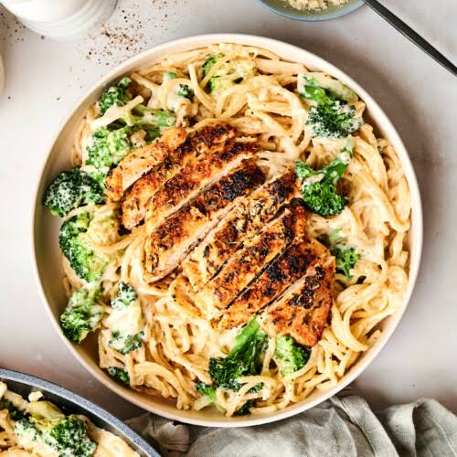

Chicken Alfredo Recipe

Chicken Alfredo is a rich and creamy pasta dish made with tender chicken
breasts and fettuccine, butter, heavy cream, and freshly grated Parmesan
cheese.
Ingredients:
- 2 boneless, skinless chicken breasts
- Salt and pepper to taste
- 4 tbsp unsalted butter
- 2 tablespoons olive oil
- 3 cloves garlic, minced
- 1.5 cup heavy cream
- 1 cup freshly grated Parmesan cheese
- 8 oz fettuccine pasta
- Fresh parsley for garnish
Instructions:
-
Boil the fettuccine in a large pot of salted water until al dente.
Save half a cup of pasta water before draining.
-
Season the chicken breasts with salt and pepper. Cook them in a
skillet with a tablespoon of butter over medium-high heat until golden
and fully cooked (165°F internal temperature). Remove the chicken and
set it aside to rest
-
In the same skillet, melt the remaining butter over medium-low heat.
Add the minced garlic and cook for about 30 to 45 seconds until
fragrant
-
Pour in the heavy cream and bring to a gentle simmer. Let it thicken
slightly for a few minutes.
-
Whisk in the freshly grated Parmesan cheese until smooth and melted.
Season with salt and pepper.
-
Add the cooked pasta directly into the sauce, tossing to coat. Use a
splash of the reserved pasta water if the sauce is too thick.
-
Slice the rested chicken and place it on top of the pasta. Garnish
with fresh parsley and extra Parmesan.